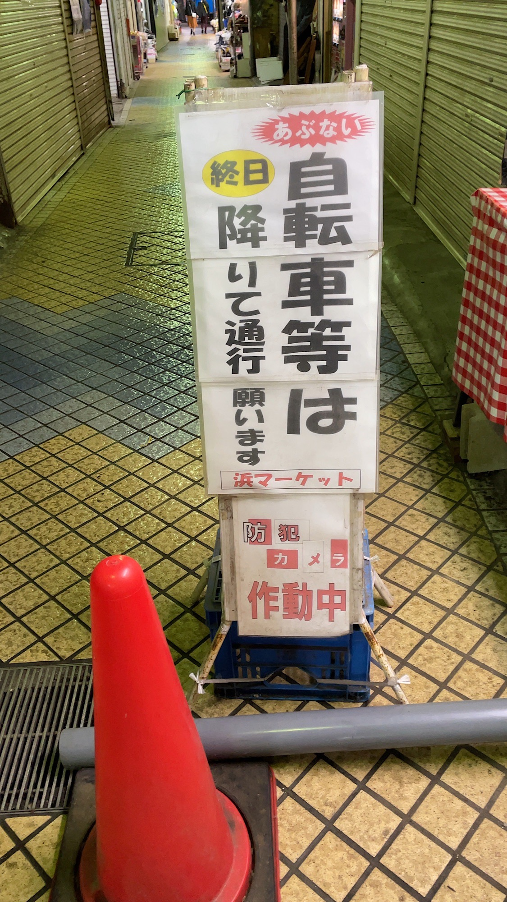

１枚目の写真は横浜にある浜マーケットという商店街の入り口にある看板である。
2022年10月11日に筆者が撮影した。
近くで見ると少し汚れていて、商店街の歴史を感じさせる看板であった。

２枚目はその商店街の中にある自転車通行を注意する看板である。
2022年10月11日に筆者が撮影した。
同じ看板が商店街内に3つ存在し、目立つように「自転車等は」の文字は大きく書かれてあった。

3枚目はその商店街の付近にある子どもとの事故を注意する看板である。
2022年10月11日に筆者が撮影した。
この看板の近くには、小学校と公園があり、子どもの飛び出しを注意するために設置された看板だと考える。